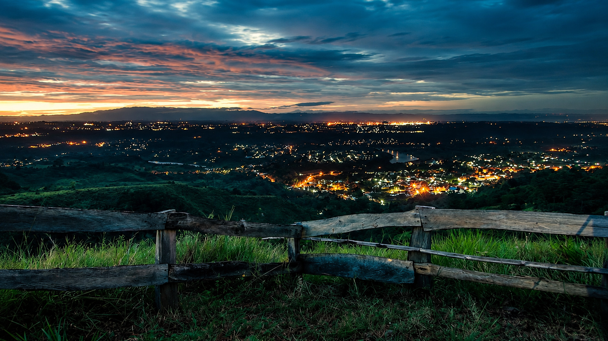
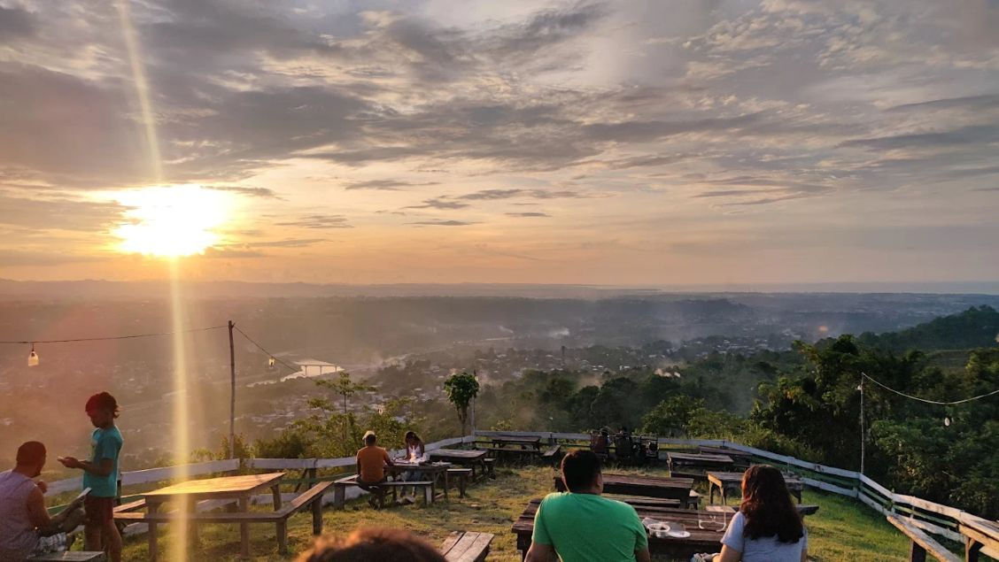

Eden Solace


Eden's Solace is often described as a "mini-sanctuary" or a "hidden gem" perched on the Upper Sumpong hilltop in Indahag. Unlike flashier, more commercialized overlooking restaurants in Cagayan de Oro (like High Ridge or Ultra Winds), Eden’s Solace leans heavily into a rustic, low-key, and minimalist backyard-garden charm.It features simple wooden benches, green lawns, and native flora like bright orange and yellow marigolds. Because it is physically elevated higher than many nearby spots, it catches a constant, crisp mountain breeze, making it a refreshing, cool escape in the late afternoons and evenings when the city down below starts to heat up.